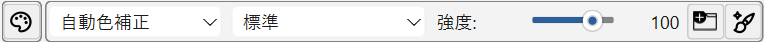
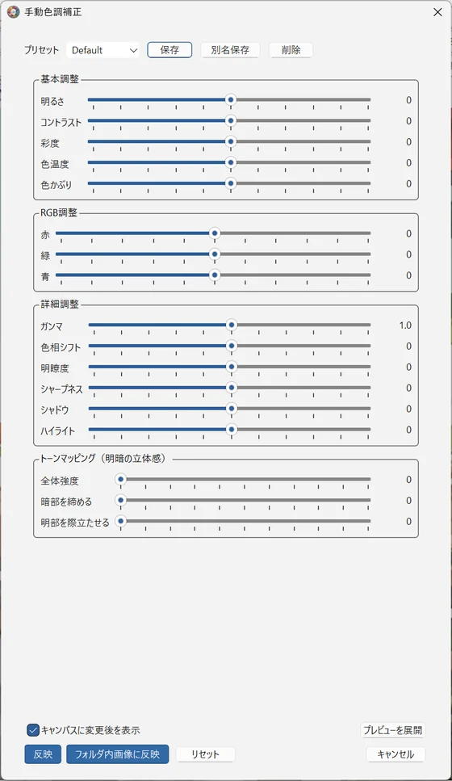
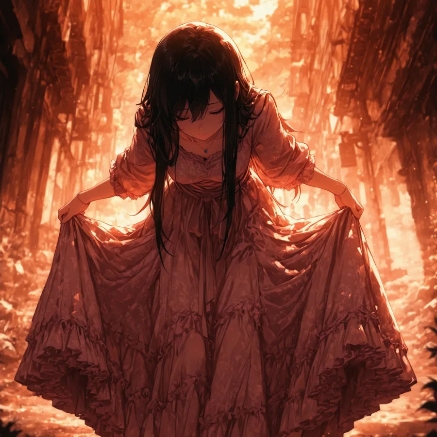
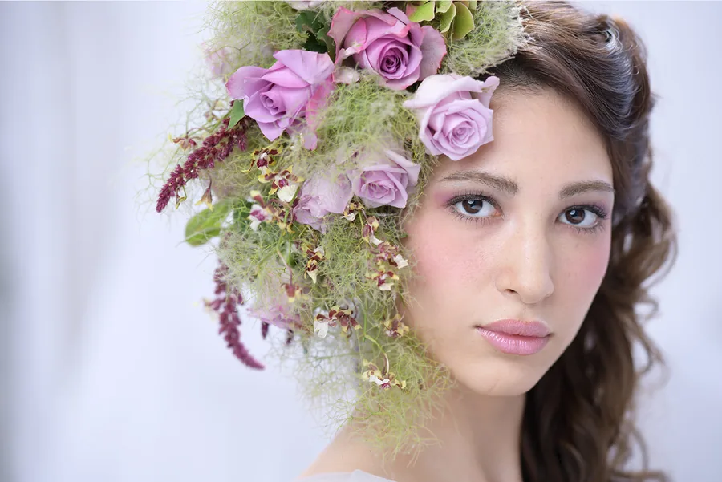
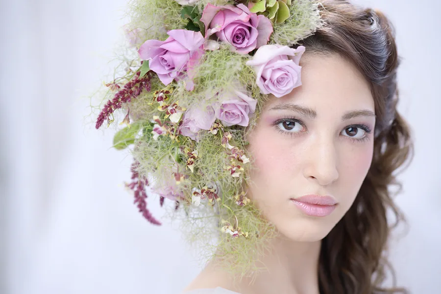
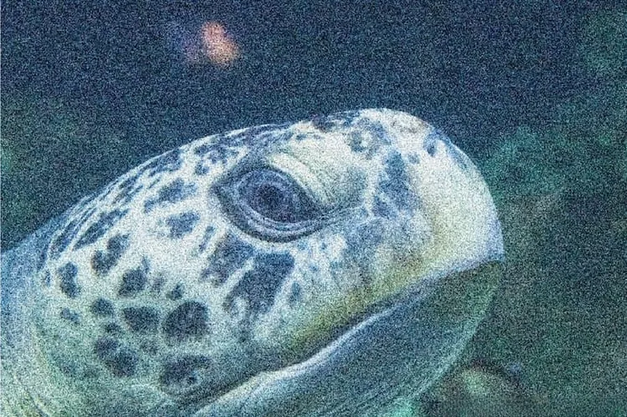
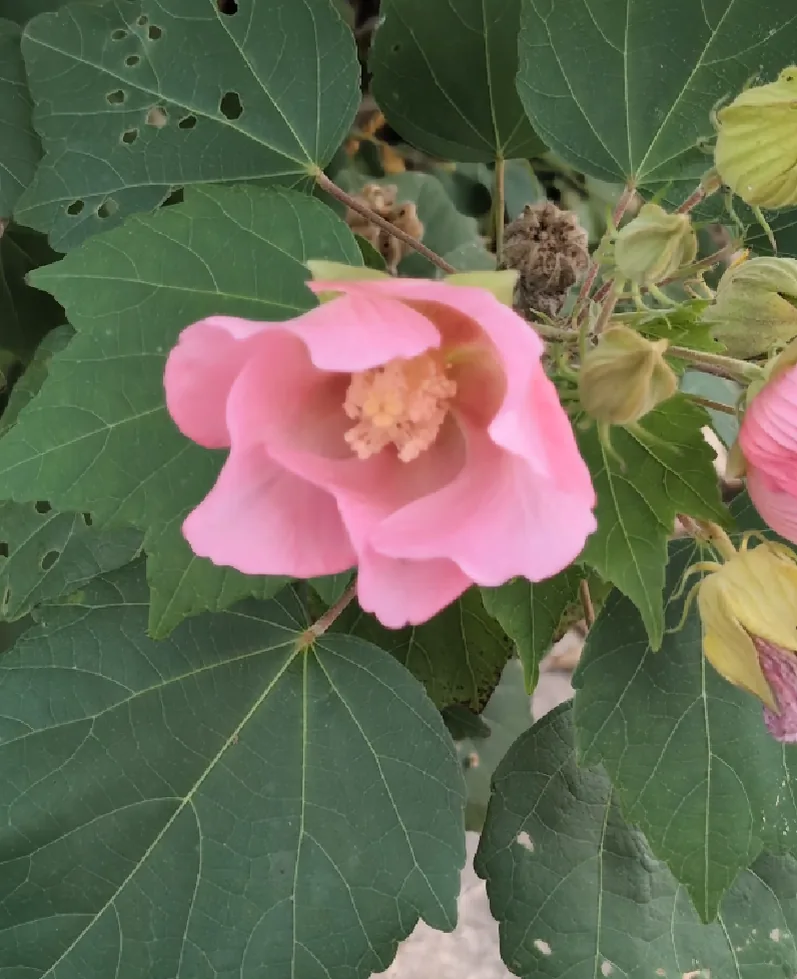
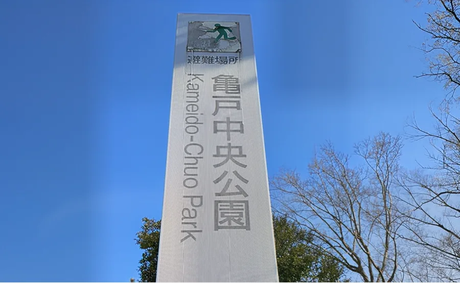

色調補正・AI補正
明るさや色味をスライダーで整える手動補正と、目的別のAIモデルで補正するAI補正があります。どちらもフォルダ一括処理に対応しています。
ツールバー

123456
| 1手動色調補正 | 手動色調補正の画面を開きます。 |
| 2カテゴリ | AI補正の目的（下表）。 |
| 3種類 | カテゴリごとのモデル・プリセット。 |
| 4強度 | 100で補正結果そのまま、0で元画像のまま。マイナスにすると逆方向に変化します（-200〜200）。 |
| 5フォルダ | ONにして実行すると、同じフォルダの画像すべてを処理します（実行前に、上書き保存か別ファイルとして保存かを選びます）。 |
| 6実行 | AI補正を実行します。 |
手動色調補正

12345678910| 1プリセット | 設定値を名前を付けて保存・呼び出し・削除します。 |
| 2基本調整 | 明るさ・コントラスト・彩度・色温度・色かぶり |
| 3RGB調整 | 赤・緑・青 |
| 4詳細調整 | ガンマ・色相シフト・明瞭度・シャープネス・シャドウ・ハイライト |
| 5トーンマッピング | 全体強度・暗部を締める・明部を際立たせる（明暗の立体感） |
| 6キャンバスに変更後を表示 | OFFにすると元画像と見比べられます。 |
| 7プレビューを展開 | 変更前・変更後のプレビューを並べて表示します。 |
| 8反映 | 現在の画像に反映します。 |
| 9フォルダ内画像に反映 | 同じ設定をフォルダ内の画像すべてに適用します。 |
| 10リセット | すべての値を初期値に戻します。 |
AI補正のカテゴリ
カテゴリを選び、種類を選んで実行します。初回はモデルをダウンロードします。
| カテゴリ | 種類 | 用途 |
|---|---|---|
| 自動色補正 | 標準／黒締め／黒締め（強）／高品質・高負荷 | 画像全体の色味と明るさを自然に整えます。黒締めは暗部を締めてコントラストを出します。 |
| 明るさ補正 | 露出補正／低照度補正１／低照度補正２ | 白飛び・黒つぶれ感の緩和、暗い画像を明るく見やすく。 |
| 写真向け色補正 | 色・トーン補正１／色・トーン補正２ | 写真の色味とトーンを整えます。 |
| ノイズ除去 | 弱／中／強／忠実重視／質感重視／別方式 | ざらつきや圧縮ノイズを軽減。忠実重視・質感重視は実写向けです。 |
| ブレ除去 | 通常ブレ／JPEG向け／モーションブラー補正／ピンぼけ補正 | 手ブレ、動きによるブレ、ピントずれを補正します。 |
| JPEG劣化補正 | 標準／強圧縮向け | JPEG圧縮によるブロックノイズやにじみを軽減します。 |
| モアレ補正 | モアレ低減／高品質モアレ低減 | スクリーン撮影などで出る縞模様を軽減します。 |
| 色乱れ補正 | 色段差補正／紫フリンジ除去 | グラデーションの色段差（偽輪郭）や、輪郭の紫のにじみを軽減します。 |
補正の例

処理前 処理後
処理後
処理前
処理後処理前
 処理後
処理後 処理前
処理前 処理後
処理後
処理前処理後
 処理前
処理前 処理後
処理後 処理前
処理前
処理後 処理前
処理前 処理後
処理後 処理前
処理前
処理後